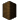
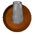
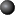
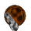

Rules
Introduction
You have to build castle walls, which allows you to place cannons inside these walls. Your goal is to destroy the enemy's castles by shooting down his castle walls with your cannons. The game is separated into three phases. You can perform different actions in each of the phases.
1st Phase: Build
Build walls around as many castles as possible. In order to survive you have to enclose at least one castle. Try to avoid building walls on the houses, or angry grunts will try to damage your walls with their tanks!
1st button: Place the current block
2nd button: Turn the block by 90 degree
|  | |||
| Castle | Home Castle | House | Grunt |
|---|
2nd Phase: Place Cannons
Now you can place cannons equal to the number of castles you have surrounded. Your home castle earns you one extra cannon. Instead of placing three normal cannons you can place one big cannon that will cause additional trouble for you enemys.
1st button: Place selected cannon
2nd button: Switch between small/big cannon
|  | |
| Cannon | Big Cannon |
|---|
3rd Phase: Fight!
It's time to fight! Aim at your opponent's walls with your crosshair and shoot them down. You can also destroy enemy cannons, but they can take a lot of shots before they are destroyed. The number of shots at a certain time is limited to the total of cannons you control (cannons in unenclosed areas don't count towards this total).
Beware of the terrible big cannons. Their load will make it impossible to build where their shot hits the ground and the garbage left there will take three rounds to dissolve.
1st button: Shoot
2nd button: Faster movement
|  |  | ||||
| Cannon Ball | Garbage (Fresh) |
Garbage (Medium) |
Garbage (Old) |
Cannon (destroyed) |
Big Cannon (destroyed) |
|---|
Maps
River
The classic map. The different player's territories are separated by river.
Conquer
A map without artificial borders between the players. A player can conquer castles and cannons which were formerly controlled by another player. To prevent players from sabotaging enemy wall construction, walls may only be placed in proximity to other friendly walls.
Grunt Assault
This single-player map lets you fight against a horde of angry grunts, who are trying hard to destroy the walls around your last castle. The grunts regularly get reinforcements, but the reinforcement strength will decline over time. Your goal is to eliminate all grunts for the map.
Appendix
Credits
Coding and Graphics: Karl Bartel (comments are always welcome)
Music: Crystal Crew
Fonts: Larabie Fonts (font readme)
Help Wanted
I'm always looking for people interested in improving this game. If you are interested, get in contact with me, and we'll look for a suitable task together. The main areas are:
- Code (python, a lot of different parts of varying complexity)
- Graphics
- Sound/Music (music should be in mod-files or a similar format to keep the file size down)
- Documentation (as HTML)
- Packaging for different operating systems
If you don't have much time, there are some small things you can always do:
- Submit bug reports when something goes wrong (via email)
- Provide feedback and tell me which new features are important for you
- Improve a small part of the documentation, spot typos, etc.
Links
Castle-Combat website: http://www.linux-games.com/castle-combat
Networking
Port number: 50386
License
This program is free software; you can redistribute it and/or modify it under the terms of the GNU General Public License as published by the Free Software Foundation; either version 2 of the License, or (at your option) any later version.
This program is distributed in the hope that it will be useful, but WITHOUT ANY WARRANTY; without even the implied warranty of MERCHANTABILITY or FITNESS FOR A PARTICULAR PURPOSE. See the GNU General Public License for more details.
See this page for more information about the GPL.